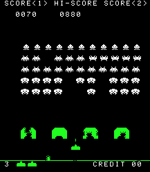
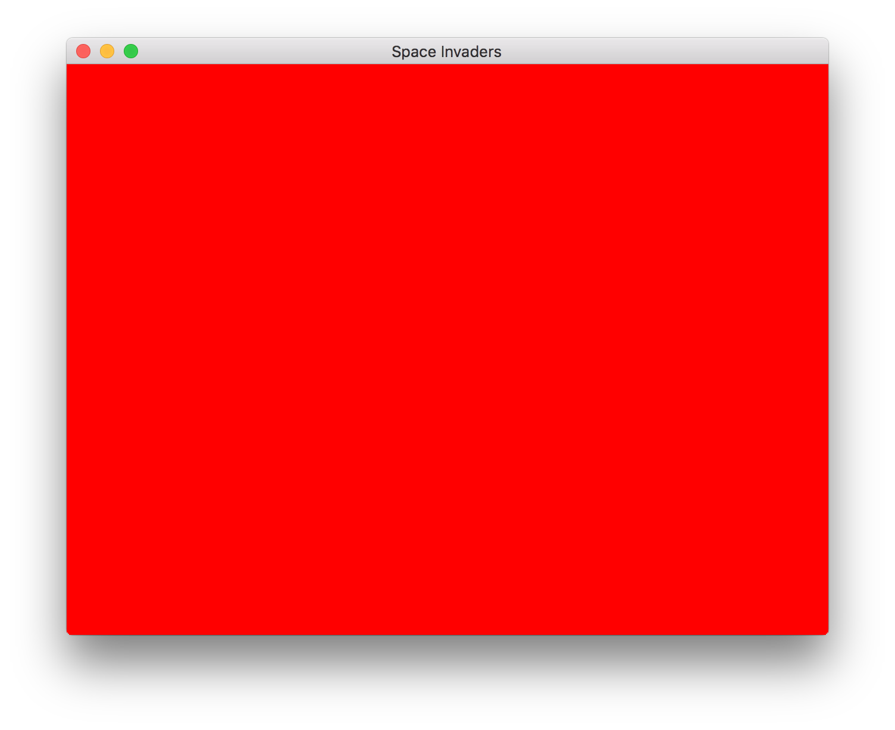

Space Invaders from Scratch - Part 1
In this series of posts, I am going to create a clone of the classic arcade game, space invaders, in C++ using only a few dependencies. In this post I will set up a window with an OpenGL 3.3 context using GLFW and GLEW, as the only dependencies for this simple clone.
The complete code of this post can be found here.
Space Invaders

Space Invaders is an arcade game, which was first released in 1978. It is a 2D horizontal shooter where the player controls a cannon by moving it across the bottom of the screen and firing at a swarm of aliens. Points are earned for every alien it shoots down. A UFO will occasionally move across the top of the screen and award bonus points if destroyed. As more aliens are defeated, the game speeds up. The aliens also fire shots randomly as they approach the bottom of the screen, and If the shots hit the player, he loses a life. The cannon is partially protected by several bunkers that are gradually destroyed by numerous blasts from the aliens or player. Defeating all the aliens brings another wave and repairs all bunkers. The game ends if all bunkers get destroyed or the aliens reach the bottom, or if the player loses all lives.
Setting Goals
It is important to set out goals before you start a new project. My plan is not to faithfully reconstruct the original space invaders game, but to create space-invaders-like game with only the core elements. It is also very common in game development to first create a rough prototype using the core mechanics you would like to test out, and later add "polish". So the plan is to create a space invaders prototype. In this prototype, I'd like to have the canon controlled by the player, the alien waves that gradually travel towards the canon, and most importantly, the ability to shoot for both aliens and the canon. I will thus ignore the UFO, and the bunkers, but these can easily be implemented.
Note that all games can be decomposed into very basic elements (I highly recommend this great talk by Raph Koster). In space invaders, two basic elements can be recognized -- shooting, which can also be seen as a form of collision detection, and movement. Most AAA games involve some kind of shooting or collision detection, and movement. The complexity of these games arises from the number elements that are mixed together, the number of dimensions, the complexity of the movement, and the various game rules. So, developing even a simple clone of space invaders can teach us a lot about games and game development.
So, having set our goals, let's start programming!
Hello Window
There are various ways to create a window. You can either use the native API, e.g. Cocoa, X, or WinAPI, or you can use a cross-platform library such as Qt or GLFW. If you want complete control over your code, you could choose the native API approach, but to avoid headaches and to easily make this small project cross-platform, I decided to go with GLFW. GLFW is lightweight, and has a simple C API.
To use GLFW, we need to include its header file. Along with it we include the standard C IO header file,
#include <cstdio> #include <GLFW/glfw3.h>
Before creating a window in GLFW, we need to be able to get error events. Events in GLFW are reported through callbacks. The error callback is set in GLFW using the function
GLFWerrorfun glfwSetErrorCallback(GLFWerrorfun cbfun)
The callback should have the following signature,
typedef void(*GLFWerrorfun)(int, const char *)
where in the first argument it receives the error code, and in the second argument it receives the error description as a UTF-8 encoded string. We create a simple error callback that prints the error description to stderr.
void error_callback(int error, const char* description) { fprintf(stderr, "Error: %s\n", description); }
In our main function, we hand-over our error callback to GLFW so that it can call it when an error occurs,
glfwSetErrorCallback(error_callback);
We can now poceed with initializing the GLFW library,
if(!glfwInit()) { return -1; }
Finally, to create a window, we add the following code,
window = glfwCreateWindow(640, 480, "Space Invaders", NULL, NULL); if(!window) { glfwTerminate(); return -1; } glfwMakeContextCurrent(window);
which will create a window with title "Space Invaders" and a resolution of 640x480 with an OpenGL context. The last two parameters of the glfwCreateWindow call are for specifying a monitor for full-screen mode, and for sharing context between different windows. We call glfwTerminate to let GLFW destroy its resources if there where any problems creating the window. We also need to tell GFLW to make subsequent OpenGL calls apply to the current context. We do this by calling glfwMakeContextCurrent. Currently the OpenGL context version we receive from GLFW is unknown. We need to tell GLFW that we would like a context that is at least version 3.3. This is done by giving GLFW the appropriate "hints" before creating the window,
glfwWindowHint(GLFW_OPENGL_PROFILE, GLFW_OPENGL_CORE_PROFILE); glfwWindowHint(GLFW_CONTEXT_VERSION_MAJOR, 3); glfwWindowHint(GLFW_CONTEXT_VERSION_MINOR, 3); glfwWindowHint(GLFW_OPENGL_FORWARD_COMPAT, GL_TRUE);
Unlike most libraries, OpenGL is an API specification. The actual API implementation can vary between different GPUs and vendors, operating systems, and graphics drivers.
The OpenGL specification defines many functions, and your graphics driver may not support all of them. For this reason, OpenGL functions need to be declared and loaded explicitly at runtime. Although we could handle the loading of the functions we need, it is generally recommended to use a loading library. For this project I decided to use GLEW because I have used it before in other projects. The GLEW header needs to be included before glfw3.h,
#include <GL/glew.h>
After making the context current, we initialize GLEW,
GLenum err = glewInit(); if(err != GLEW_OK) { fprintf(stderr, "Error initializing GLEW.\n"); glfwTerminate(); return -1; }
After this, we can finally make calls to OpenGL functions. Let's first query the OpenGL version we got,
int glVersion[2] = {-1, 1}; glGetIntegerv(GL_MAJOR_VERSION, &glVersion[0]); glGetIntegerv(GL_MINOR_VERSION, &glVersion[1]); printf("Using OpenGL: %d.%d\n", glVersion[0], glVersion[1]);
The Game loop
If we run the code we have written so far, we will most probably see nothing. The window will be created and the program will immediately exit. To keep the window open, we need to create a so-called game loop. A game loop is an infinite loop where input is processed, and the game is updated and drawn; it is essentially the heart of every game. Game loops can get very complicated, but again, I will keep it simple,
glClearColor(1.0, 0.0, 0.0, 1.0); while (!glfwWindowShouldClose(window)) { glClear(GL_COLOR_BUFFER_BIT); glfwSwapBuffers(window); glfwPollEvents(); }
We first set the buffer clear color for glClear to red. In graphics programming, a buffer refers to a portion of RAM used by the computer to hold a temporary image. Modern OpenGL uses a double buffering scheme; the "front" buffer is used for displaying an image, while the "back" buffer is used for drawing. The buffers are then swapped at each iteration -- this is what is done here using the glfwSwapBuffers call. Additionally, at each iteration, we instruct GLFW to process any pending events, glfwPollEvents, and terminate the infinite loop if GLFW was instructed to do so (e.g. by clicking the close button), by checking the return value of glfwWindowShouldClose. At this point, if we would like for our program to exit cleanly, we also need to make the following two calls,
glfwDestroyWindow(window); glfwTerminate();
Compiling
The complete code of this post can be found here. To compile it under Linux using g++, issue the following command on the terminal,
g++ -std=c++11 -o main -lglfw -lGLEW -lGL main.cpp
and on Mac OS X using the Xcode command line tools,
g++ -std=c++11 -o main -lglfw -lglew -framework OpenGL main.cpp
Note that we are going to use some C++11 features later on, so we compile with -std=c++11. In both cases, make sure you have GLFW 3 installed. On Linux, depending on your distribution, you can use your package manager, e.g. on Ubuntu you can install GLFW with the following command,
sudo apt install glfw3 glew
while on Mac OS X, I personally prefer using Homebrew,
brew install glfw glew
Unfortunately, I don't have Windows installed, but perhaps this article can help you setup a GLFW project in Visual Studio.  That should do it! If you successfully compiled the program, you should see a red window titled "Space Invaders", like the one above.
Conclusion
As you might have realized from this post, creating a simple window with an OpenGL context in C++, is no simple task, even using a library like GLFW. Note that we are still not drawing anything. Setting up some simple drawing routines also takes quite some setting up in modern OpenGL. Fortunately, we only have to do all this once, the next game will reuse a lot of the code I'm going to present in this blog series.